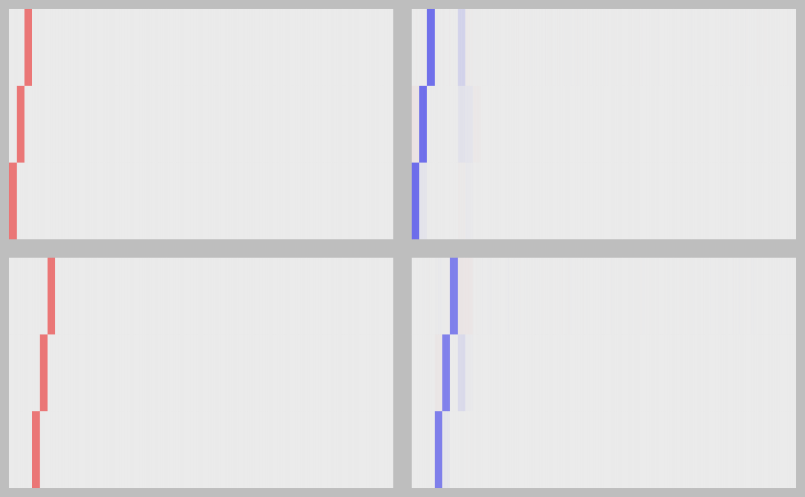

hd_lfpca.RdFor V-by-J dimensioanl matrix of Y, HDLPCA first reduce the dimension of p to J if V>J: Y = UDV. Then, longitudinal PCA is applied to the projected scores of Y on the p-dimensional subspace: Y*=DY. The dimension of the subspace is selected based on the variance explained by first p-components. The default value is projectthresh=1.
hd_lfpca(
Y,
T,
J,
I,
visit,
verbose = FALSE,
prefix = date(),
Nx = NA,
Nw = NA,
varthresh = 0.95,
projectthresh = 1,
timeadjust = FALSE
)p-by-J matrix,
Time of theimage collection
Total number of observations
Total number of subjects
Vector of number of visits per subjects
(default=FALSE)
Dimension of the subject-specific components
Dimension of the subject-visit specific components
(default=0.99) Threshold for variance explained for both subject-specific and subject-visit specific compoents for dimension selection
Threshold for variance explain in the first step of SVD
(default=FALSE) Scale time per subject
xi : Subject-specific principal component scores. phix0: Subject-specific principal comonent loadings corresponding to intercept. phix1: Subject-specific principal comonent loadings corresponding to slope. zeta : Subject-visit-specific principal component scores. phiw : Subject-visit-specific principal comonent loadings
Zipunnikov, V., Greven, S., Shou, H., Caffo, B., Reich, D. S., & Crainiceanu, C. (2014). Longitudinal High-Dimensional Principal Components Analysis with Application to Diffusion Tensor Imaging of Multiple Sclerosis. The Annals of Applied Statistics, 8(4), 2175–2202.
set.seed(12345678)
I=100
visit=rpois(I,1)+3
time = unlist(lapply(visit, function(x) scale(c(0,cumsum(rpois(x-1,1)+1)))))
J = sum(visit)
V=2500
phix0 = matrix(0,V,3);phix0[1:50,1]<-.1;phix0[1:50 + 50,2]<-.1;phix0[1:50 + 100,3]<-.1
phix1 = matrix(0,V,3);phix1[1:50+150,1]<-.1;phix1[1:50 + 200,2]<-.1;phix1[1:50 + 250,3]<-.1
phiw = matrix(0,V,3);phiw[1:50+300,1]<-.1;phiw[1:50 + 350,2]<-.1;phiw[1:50 + 400,3]<-.1
xi = t(matrix(rnorm(I*3),ncol=I)*c(8,4,2))*3
zeta = t(matrix(rnorm(J*3),ncol=J)*c(8,4,2))*2
Y = phix0%*% t(xi[rep(1:I, visit),]) + phix1%*% t(time * xi[rep(1:I, visit),]) + phiw %*% t(zeta) + matrix(rnorm(V*J,0,.1),V,J)
re<-hd_lfpca(Y,T=scale(time,center=TRUE,scale=TRUE),J=J,I=I,visit=visit, varthresh=0.95, projectthresh=1,timeadjust=FALSE)
cor(phix0, re$phix0)
#> [,1] [,2] [,3] [,4]
#> [1,] -0.99720326 0.09083734 0.02831198 -0.03210389
#> [2,] -0.04360455 -0.99192254 0.03077441 0.07037878
#> [3,] 0.02504619 0.01250385 -0.97917094 0.11347131
cor(phix1, re$phix1)
#> [,1] [,2] [,3] [,4]
#> [1,] -0.99755948 0.08022781 -0.001390343 0.12272832
#> [2,] -0.04494264 -0.98371159 0.029040944 0.05042452
#> [3,] 0.02278884 0.01911019 -0.993862521 0.07308567
library(gplots)
#>
#> Attaching package: ‘gplots’
#> The following object is masked from ‘package:stats’:
#>
#> lowess
par(mfrow=c(2,2),mar=rep(0.5,4),bg="gray")
bs=c(-100:100)/1000*1.5
image(phix0, axes=F,col=bluered(200),breaks=bs)
image(re$phix0[,1:3], axes=F,col=bluered(200),breaks=bs)
image(phix1, axes=F,col=bluered(200),breaks=bs)
image(re$phix1[,1:3], axes=F,col=bluered(200),breaks=bs)
